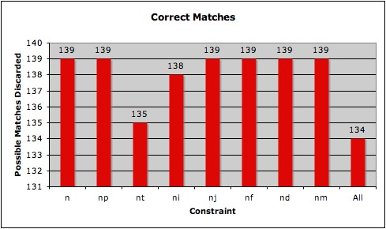
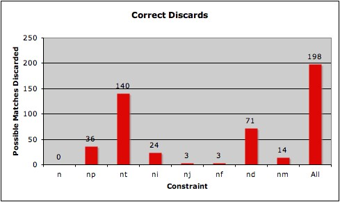

The accuracy and usefulness of each constraint is determined by comparing
the manual mapping to the results of the automatic mapping algorithm for
those classes covered by the manual mapping. The manual mapping produced
the following results:
- 15 main classes covered
- 22 total classes covered (includes subclasses)
- 96 verbs represented
- 289 verb-frame pairs represented
- 403 naive VN-Cyc matches analyzed
- 139 real matches found
- 264 invalid matches found
Besides the naive constraint, there were 7 additional constraints thought
good enough to include in the automatic matching algorithm. These are shown
here along with the mnemonic that represents them an a brief description:
- Preposition (p) -
if a Cyc rule specifies an adjoining preposition, that preposition must be included
somewhere after the verb in the VerbNet syntax.
- Transitivity (t) -
if a Cyc rule is TransitiveNPFrame or
DitransitivePPFrameType then the VerbNet syntax must specify
a noun phrase immediately after the verb. If the Cyc rule is
IntransitiveVerbFrame, MiddleVoiceFrame, or
TransitivePPFrameType then the VerbNet syntax must not have
a noun phrase immediately after the verb.
- Infinitive/Gerund (i) -
a Cyc rule can contain the token :INF-COMP or
:GERUND if and only if the VerbNet syntax contains a syntax
restriction related to 'inf' or 'ing'.
- Adjective (j) -
a Cyc rule can contain the token :ADJ if and only if the VerbNet
syntax contains an adjective
- fromLocation Implies Source (f) -
if a Cyc rule uses the predicate fromLocation to specify
the object of the rule (:OBJECT) then the VerbNet syntax
must have the noun phrase 'Source' immediately following the verb.
- doneBy/performedBy Implies Agent (d) -
if a Cyc rule uses the predicates doneBy or performedBy
to specify the subject of the rule (:SUBJECT) then the VerbNet syntax
must have the noun phrase 'Agent' immediately preceding the verb.
- Middle Voice Implies No Agent (m) -
if a Cyc rule is MiddleVoiceFrame then the VerbNet syntax must not have
the noun phrase 'Agent' immediately preceding the verb.
An automatic matching algorithm is a success if it matches 100% of the possible matches that
the manual mapping matched, and discards 100% of the possible matches that the
manual mapping discarded. In this case the automatic matching algorithm would be a success
if it matched all 139 that the manual mapping matched, and discarded the 264 that
the manual mapping discarded.
The automatic matching algorithm is the sum of its parts, i.e. the constraints it implements.
A constraint is good if it does not incorrectly discard actual matches and if it discards
as many of the actual discards as it can. No one constraint can discard all of the possible
matches that need to be discarded. They work in unison.
Below are two charts. The first
describes the number of possible matches that the constraint matched correctly (i.e. the manual
mapping had the same match). The second chart shows the number of possible matches that
the constraint discarded correctly (i.e. the manual mapping discarded the same possible match).


As you can see only t and i
incorrectly discarded a possible match. The counts for the
'Correct Discards' chart do not add up to the 'All' column because some of the constraints
discard the same possible matches (there's overlap). The naive algorithm does not correctly
discard any that the manual mapping discarded since the manual mapping began with naive matches.
When shown as a percentage of the total possible in each category we have:
| % of manual mapping matches matched by auto |
| n |
np |
nt |
ni |
nj |
nf |
nd |
nm |
All |
| 100% |
100% |
97% |
99% |
100% |
100% |
100% |
100% |
96% |
| % of
manual mapping discards discarded by auto |
| n |
np |
nt |
ni |
nj |
nf |
nd |
nm |
All |
| 0% |
14% |
53% |
9% |
1% |
1% |
27% |
5% |
75% |
Now that we've seen the relative accuracy and usefulness of each constraint on the manual
mapping data, what effect does each have on the whole of the possible VerbNet-Cyc mapping?
If there are 29,245 verb-frame pairs in VerbNet, and 3,256 Cyc rules, then there are
29,245 x 3,256 = 95,221,720
possible matches. But this huge number includes extraneous possible matches (like
between a verb-frame pair for verb 'jump' and the Cyc rule for verb 'smash'). After the
naive constraint is applied we get 26,162 possible matches. From this number we can
see the effect each constraint has on all the data. Below is number of possible
matches discarded for all naive matches:
| n |
np |
nt |
ni |
nj |
nf |
nd |
nm |
All |
| 0 |
5,265 |
8,947 |
1,738 |
1,811 |
19 |
4,303 |
583 |
16,119 |
You'll notice that a constraint's performance in the manual mapping does not
necessarily directly correspond to the effect it will have on the complete
of data. The Adjective constraint, for example, has 9 times less of an effect
on the manual mapping than the Infinitive/Gerund rule (by discards), yet on
the whole it affects more of the entire data (in terms of discards). This is
because the manual mapping can emphasize different types of rules just based
on the arbitrary manner by which the classes are represented.
Finally, a rough check can be made as to how reasonable these numbers sound.
The manual mapping analyzed 403 possible matches and found 139 of them to be valid.
This is a 139 / 403 = 34.5% conversion ratio. The final automatic mapping matched
10,043 matches (26,162 - 16,119 = 10,043). Thus the conversion ratio is
10,043 / 26,162 = 38%. With some more constraints it is reasonable to assume the automatic
mapping could approach the actual conversion ratio discovered by the manual mapping.
The final mapping is provided here. It is in XML format and references Cyc rule numbers
as specified in the adjoining files. A compressed version is also provided.
The Cyc rule numbers in the final mapping file correspond to how they are numbered
in the above rule files (the numbering corresponds to order in which they exist in the file).
|